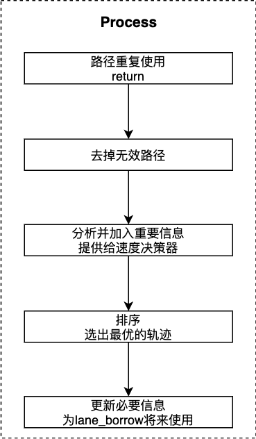

路径评估决策¶
概览¶
路径评估决策是规划模块的任务，属于task中的decider类别。
规划模块的运动总体流程图如下：

总体流程图以lane follow场景为例子进行说明。task的主要功能位于Process函数中。
Fig.1的具体运行过程可以参考path_bounds_decider。
路径评估决策相关代码及对应版本¶
本节说明path assessment decider的代码流程。
请参考代码Apollo r6.0.0 path_assessment_decider
输入
Status PathAssessmentDecider::Process(Frame* const frame, ReferenceLineInfo* const reference_line_info)
输入Frame，reference_line_info。具体解释可以参考path_bounds_decider。
输出
路径排序之后，选择第一个路径。结果保存在reference_line_info中。
路径评估决策代码流程及框架¶
代码主体流程如下图：

路径重复使用¶
... ...
// 如果路径重复使用则跳过
if (FLAGS_enable_skip_path_tasks && reference_line_info->path_reusable()) {
return Status::OK();
... ...
去掉无效路径¶
... ...
// 1. 删掉无效路径.
std::vector<PathData> valid_path_data;
for (const auto& curr_path_data : candidate_path_data) {
// RecordDebugInfo(curr_path_data, curr_path_data.path_label(),
// reference_line_info);
if (curr_path_data.path_label().find("fallback") != std::string::npos) {
if (IsValidFallbackPath(*reference_line_info, curr_path_data)) {
valid_path_data.push_back(curr_path_data);
}
} else {
if (IsValidRegularPath(*reference_line_info, curr_path_data)) {
valid_path_data.push_back(curr_path_data);
}
}
}
const auto& end_time1 = std::chrono::system_clock::now();
std::chrono::duration<double> diff = end_time1 - end_time0;
ADEBUG << "Time for path validity checking: " << diff.count() * 1000
<< " msec.";
... ...
其中fallback的无效路径是偏离参考线以及道路的路径。regular的无效路径是偏离参考线、道路，碰撞，停在相邻的逆向车道的路径。
分析并加入重要信息¶
... ...
// 2. 分析并加入重要信息给speed决策
size_t cnt = 0;
const Obstacle* blocking_obstacle_on_selflane = nullptr;
for (size_t i = 0; i != valid_path_data.size(); ++i) {
auto& curr_path_data = valid_path_data[i];
if (curr_path_data.path_label().find("fallback") != std::string::npos) {
// remove empty path_data.
if (!curr_path_data.Empty()) {
if (cnt != i) {
valid_path_data[cnt] = curr_path_data;
}
++cnt;
}
continue;
}
SetPathInfo(*reference_line_info, &curr_path_data);
// 修剪所有的借道路径，使其能够以in-lane结尾
if (curr_path_data.path_label().find("pullover") == std::string::npos) {
TrimTailingOutLanePoints(&curr_path_data);
}
// 找到 blocking_obstacle_on_selflane, 为下一步选择车道做准备
if (curr_path_data.path_label().find("self") != std::string::npos) {
const auto blocking_obstacle_id = curr_path_data.blocking_obstacle_id();
blocking_obstacle_on_selflane =
reference_line_info->path_decision()->Find(blocking_obstacle_id);
}
// 删掉空路径
if (!curr_path_data.Empty()) {
if (cnt != i) {
valid_path_data[cnt] = curr_path_data;
}
++cnt;
}
// RecordDebugInfo(curr_path_data, curr_path_data.path_label(),
// reference_line_info);
ADEBUG << "For " << curr_path_data.path_label() << ", "
<< "path length = " << curr_path_data.frenet_frame_path().size();
}
valid_path_data.resize(cnt);
// 如果没有有效路径，退出
if (valid_path_data.empty()) {
const std::string msg = "Neither regular nor fallback path is valid.";
AERROR << msg;
return Status(ErrorCode::PLANNING_ERROR, msg);
}
ADEBUG << "There are " << valid_path_data.size() << " valid path data.";
const auto& end_time2 = std::chrono::system_clock::now();
diff = end_time2 - end_time1;
ADEBUG << "Time for path info labeling: " << diff.count() * 1000 << " msec.";
... ...
这一步骤的代码执行流程如下： 1). 去掉空的路径 2). 从尾部开始剪掉lane-borrow路径，从尾部开始向前搜索，剪掉如下类型path_point： (1) OUT_ON_FORWARD_LANE (2) OUT_ON_REVERSE_LANE (3) 未知类型 3). 找到自车道的障碍物id，用于车道选择 4). 如果没有有效路径，返回错误码
排序并选出最有路径¶
这一步请看最后一章相关算法解析
更新必要信息¶
// 4. Update necessary info for lane-borrow decider's future uses.
// Update front static obstacle's info.
auto* mutable_path_decider_status = injector_->planning_context()
->mutable_planning_status()
->mutable_path_decider();
if (reference_line_info->GetBlockingObstacle() != nullptr) {
int front_static_obstacle_cycle_counter =
mutable_path_decider_status->front_static_obstacle_cycle_counter();
mutable_path_decider_status->set_front_static_obstacle_cycle_counter(
std::max(front_static_obstacle_cycle_counter, 0));
mutable_path_decider_status->set_front_static_obstacle_cycle_counter(
std::min(front_static_obstacle_cycle_counter + 1, 10));
mutable_path_decider_status->set_front_static_obstacle_id(
reference_line_info->GetBlockingObstacle()->Id());
} else {
int front_static_obstacle_cycle_counter =
mutable_path_decider_status->front_static_obstacle_cycle_counter();
mutable_path_decider_status->set_front_static_obstacle_cycle_counter(
std::min(front_static_obstacle_cycle_counter, 0));
mutable_path_decider_status->set_front_static_obstacle_cycle_counter(
std::max(front_static_obstacle_cycle_counter - 1, -10));
}
// Update self-lane usage info.
if (reference_line_info->path_data().path_label().find("self") !=
std::string::npos) {
// && std::get<1>(reference_line_info->path_data()
// .path_point_decision_guide()
// .front()) == PathData::PathPointType::IN_LANE)
int able_to_use_self_lane_counter =
mutable_path_decider_status->able_to_use_self_lane_counter();
if (able_to_use_self_lane_counter < 0) {
able_to_use_self_lane_counter = 0;
}
mutable_path_decider_status->set_able_to_use_self_lane_counter(
std::min(able_to_use_self_lane_counter + 1, 10));
} else {
mutable_path_decider_status->set_able_to_use_self_lane_counter(0);
}
// Update side-pass direction.
if (mutable_path_decider_status->is_in_path_lane_borrow_scenario()) {
bool left_borrow = false;
bool right_borrow = false;
const auto& path_decider_status =
injector_->planning_context()->planning_status().path_decider();
for (const auto& lane_borrow_direction :
path_decider_status.decided_side_pass_direction()) {
if (lane_borrow_direction == PathDeciderStatus::LEFT_BORROW &&
reference_line_info->path_data().path_label().find("left") !=
std::string::npos) {
left_borrow = true;
}
if (lane_borrow_direction == PathDeciderStatus::RIGHT_BORROW &&
reference_line_info->path_data().path_label().find("right") !=
std::string::npos) {
right_borrow = true;
}
}
mutable_path_decider_status->clear_decided_side_pass_direction();
if (right_borrow) {
mutable_path_decider_status->add_decided_side_pass_direction(
PathDeciderStatus::RIGHT_BORROW);
}
if (left_borrow) {
mutable_path_decider_status->add_decided_side_pass_direction(
PathDeciderStatus::LEFT_BORROW);
}
}
const auto& end_time4 = std::chrono::system_clock::now();
diff = end_time4 - end_time3;
ADEBUG << "Time for FSM state updating: " << diff.count() * 1000 << " msec.";
// Plot the path in simulator for debug purpose.
RecordDebugInfo(reference_line_info->path_data(), "Planning PathData",
reference_line_info);
return Status::OK();
更新必要信息：
1.更新adc前方静态障碍物的信息 2.更新自车道使用信息 3.更新旁车道的方向 (1) 根据PathDeciderStatus是RIGHT_BORROW或LEFT_BORROW判断是从左侧借道，还是从右侧借道
路径排序算法解析¶
最后这里说明排序算法。
... ...
// 3. Pick the optimal path.
std::sort(valid_path_data.begin(), valid_path_data.end(),
std::bind(ComparePathData, std::placeholders::_1,
std::placeholders::_2, blocking_obstacle_on_selflane));
ADEBUG << "Using '" << valid_path_data.front().path_label()
<< "' path out of " << valid_path_data.size() << " path(s)";
if (valid_path_data.front().path_label().find("fallback") !=
std::string::npos) {
FLAGS_static_obstacle_nudge_l_buffer = 0.8;
}
*(reference_line_info->mutable_path_data()) = valid_path_data.front();
reference_line_info->SetBlockingObstacle(
valid_path_data.front().blocking_obstacle_id());
const auto& end_time3 = std::chrono::system_clock::now();
diff = end_time3 - end_time2;
ADEBUG << "Time for optimal path selection: " << diff.count() * 1000
<< " msec.";
reference_line_info->SetCandidatePathData(std::move(valid_path_data));
... ...
排序算法的流程具体如下：
ComparePathData(lhs, rhs, …)
路径排序：（道路评估的优劣通过排序获得）
1.空的路径永远排在后面
2.regular > fallback
3.如果self-lane有一个存在，选择那个。如果都存在，选择较长的.如果长度接近，选择self-lane 如果self-lane都不存在，选择较长的路径
4.如果路径长度接近，且都要借道:
(1) 都要借逆向车道，选择距离短的
(2) 针对具有两个借道方向的情况:
有障碍物，选择合适的方向，左或右借道
无障碍物，根据adc的位置选择借道方向
(3) 路径长度相同，相邻车道都是前向的，选择较早返回自车道的路径
(4) 如果路径长度相同，前向借道，返回自车道时间相同，选择从左侧借道的路径
5.最后如果两条路径相同，则 lhs is not < rhl 排序之后：选择最优路径，即第一个路径